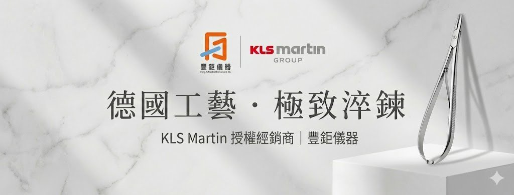
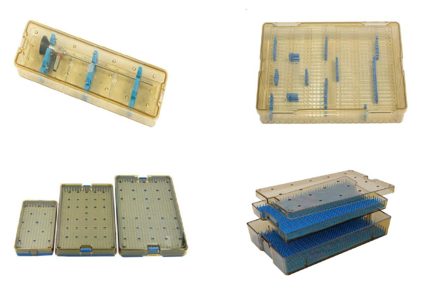

德國工藝 · 手術器械01 / 03

精選器械 / 妥善收納 / 清楚識別向下探索
01 / SURGICAL INSTRUMENTS
選配，始於理解臨床需求。
KLS MARTIN
德國工藝，
在每一次操作之間。
專注手術器械，讓需求找到合適的選擇。
豐鉅提供 KLS MARTIN 手術器械，依照科別、手術用途與既有器械規格，協助院所確認型號、尺寸與選配需求。
01器械型號與規格確認
02科別需求與器械組合討論
03產品詢價與供貨資訊
查找 KLS MARTIN 原廠器械資料。開啟原廠目錄 英文・另開新分頁
找到合適的器械？交由豐鉅協助確認。洽詢手術器械
02 / INSTRUMENT STORAGE
賽思美德 SAINSMED
查看 PPSU 器械盒尺寸與配件
| 型號 | 長 × 寬 × 高 |
|---|---|
| SMD-SBP001 | 160 × 70 × 22 |
| SMD-SBP002 | 160 × 90 × 22 |
| SMD-SBP003 | 220 × 140 × 22 |
| SMD-SBP004 | 280 × 75 × 45 |
| SMD-SBP005 | 260 × 160 × 22 |
| SMD-SBP006 | 260 × 160 × 44 |
| SMD-SBP007 | 260 × 160 × 50 |
| SMD-SBP008 | 200 × 110 × 22 |
| SMD-SBP009 | 450 × 75 × 45 |
03 / INSTRUMENT IDENTIFICATION
PURNOTE 器械識別帶ABOUT FENG JU
從器械到管理，
與醫療團隊同行。
更多產品與服務
配合不同照護場域LET’S TALK
您的需求，
我們一起確認。
產品詢價、規格確認或器械選配，
歡迎留下訊息，由豐鉅與您聯繫。
服務時間｜週一至週五 09:00–18:00
Facebook 粉絲專頁 ↗